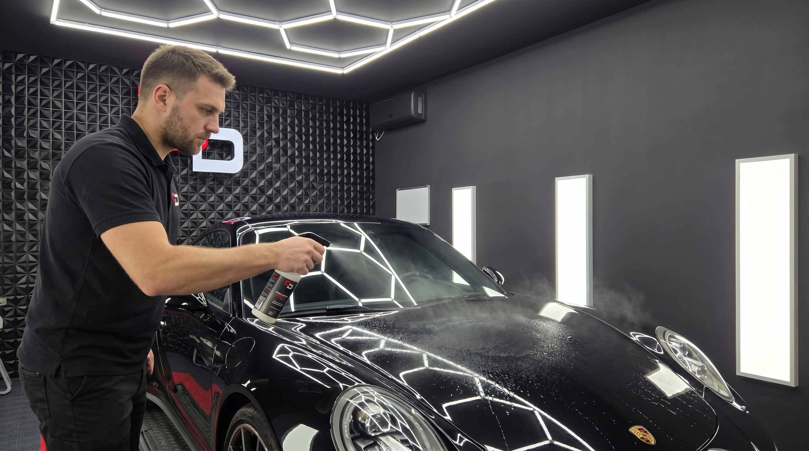
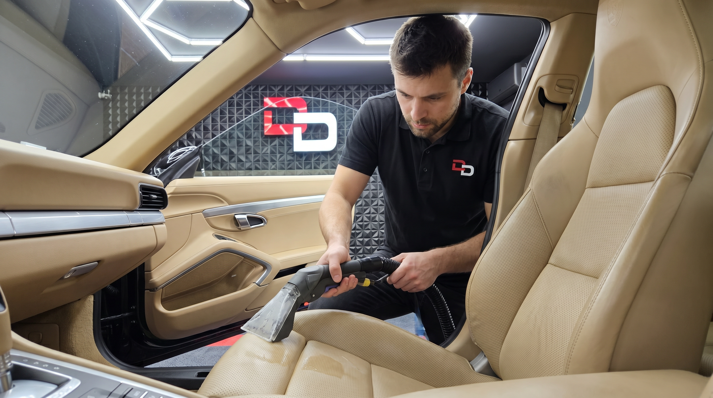
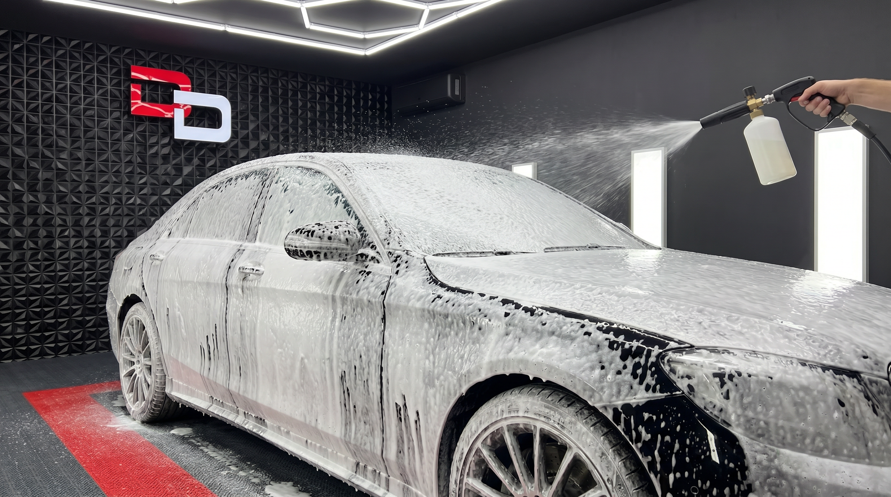
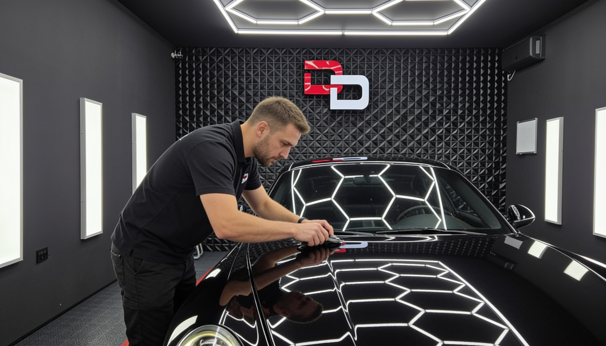
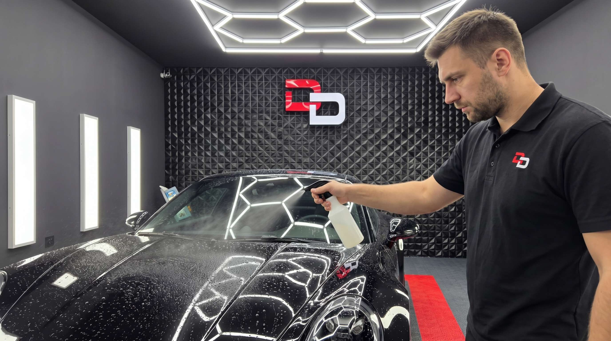
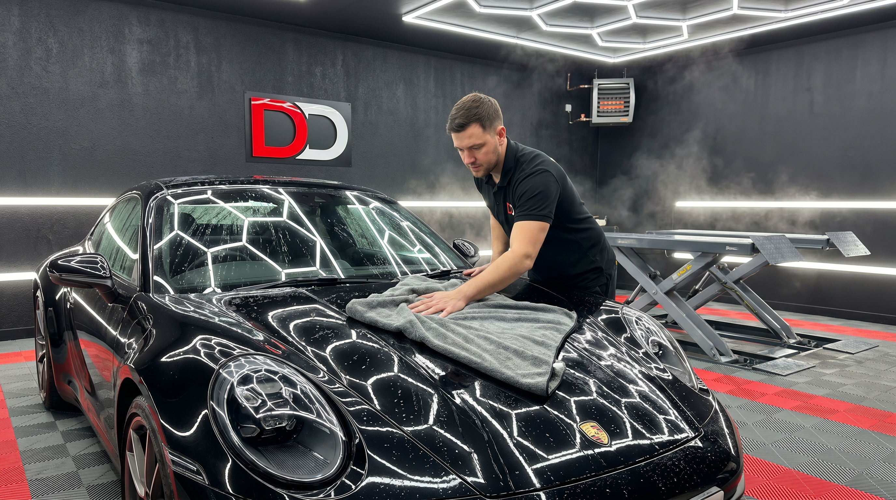
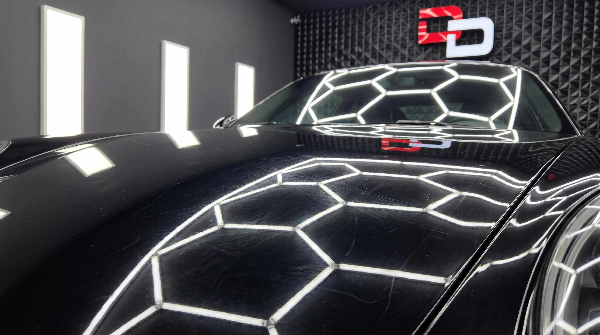
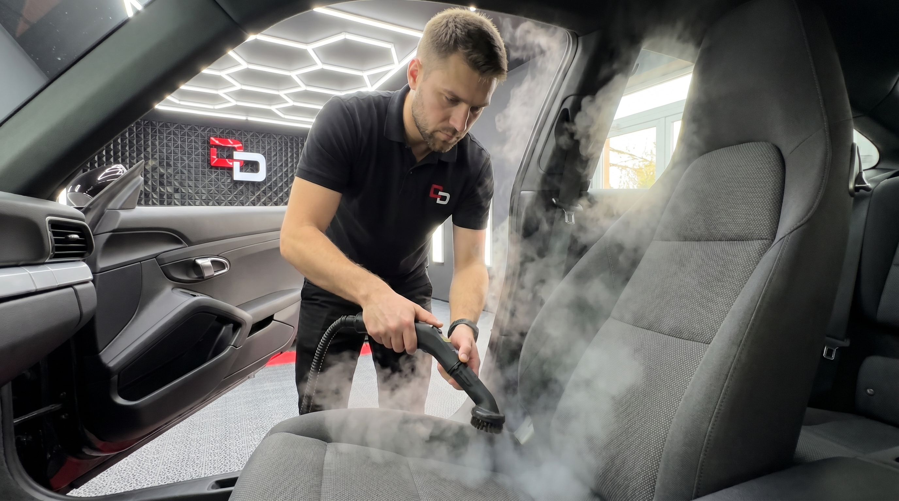
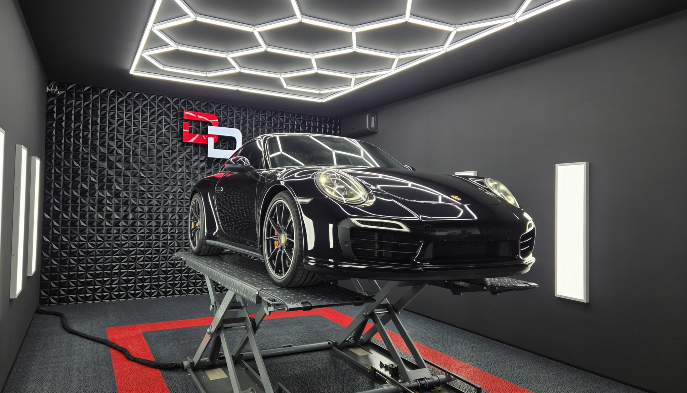

Корекција на лак ·
Корекција на лак: водич до огледален финиш
Длабочина, блескавост и без влабнувања — еве како корекцијата на лак го менува изгледот на автомобилот.
Блог
Корекција на лак, керамичка заштита, детајлинг и одржување — практични совети од тимот на Dolphin Detailing.
Корекција на лак ·
Длабочина, блескавост и без влабнувања — еве како корекцијата на лак го менува изгледот на автомобилот.

Керамичка заштита ·
Хидрофобна заштита, UV отпорност и долготраен блеск — зошто керамичкиот слој е најдобрата инвестиција по корекција на лак.

Детајлинг на ентериер ·
Седишта, теписи, пластика и клима — како професионалниот детајлинг на ентериер го враќа кабината како нова.

Детајлинг на надворешност ·
Snow foam, двофазно миење, деконтаминација и заштита — чекор по чекор, како го правиме детајлингот на надворешност во нашиот студио.

Совети ·
Автоматските перални се брзи, но често го оштетуваат лакот. Еве зошто професионалниот детајлинг е подобра инвестиција.

Керамичка заштита ·
Керамичката заштита не е „напиши и заборави“. Еве што треба да правите за да трае 2–5 години.

Сезонска нега ·
Летна жештина, зимска сол, пролетен полен — како да го заштитите автомобилот низ годината во нашата клима.

Корекција на лак ·
Кругови, влабнувања, холограми — еве како да ги препознаете дефектите на лакот и кога е потребна корекција.

Детајлинг на ентериер ·
Парењето е ефикасно, без хемикалии и длабоко — идеално за тапацир, теписи и тешко достапни места.

За нас ·
Хексагонално LED осветлување, 3D ѕидови, Meguiar's сертификат и опрема од светска класа — погледнете го нашиот студио во Струмица.
DOLPHIN DETAILING
Закажете термин денес — вашиот автомобил заслужува Dolphin квалитет.
Повикај +389 70 684 638 ↗